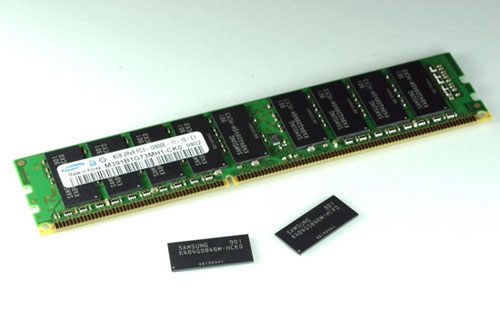

RAM
La memoria ad accesso casuale (Random Access Memory o abbreaviato RAM) è una tipologia di memoria informatica caratterizzata dal permettere l'accesso diretto a qualunque indirizzo di memoria con lo stesso tempo di accesso. La RAM si contrappone alla memoria ad accesso sequenziale e alla memoria ad accesso diretto rispetto alle quali presenta tempi di accesso sensibilmente inferiori motivo per cui è utilizzata come memoria primaria. La tipologia di memoria ad accesso casuale più comune attualmente è a stato solido, a lettura-scrittura e volatile, ma rientrano nella tipologia di memoria ad accesso casuale la maggior parte delle tipologie di ROM (inteso nell'accezione più comune e non come memoria a sola lettura), la NOR Flash (una tipologia di memoria flash), oltre a varie tipologie di memorie informatiche utilizzate ai primordi dell'informatica e oggi non più utilizzate come ad esempio la memoria a nucleo magnetico. Esclusivamente l'acronimo RAM (non il termine "memoria ad accesso casuale") ha anche una seconda accezione più ristretta ma attualmente più diffusa secondo cui la RAM è una memoria ad accesso casuale della tipologia più comune cioè a stato solido, a lettura-scrittura e volatile.